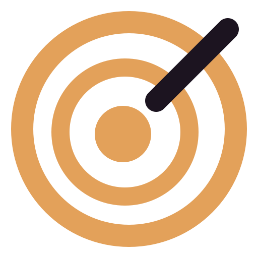
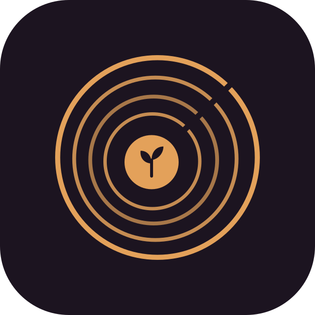

01
Groooove-Schriftzug
„Grove“ klappt zu „Groooooove“ auf, die o’s wippen im Takt und klappen wieder ein.
Klasse .a01 Idee für: Startseite, Hero
Grove · Testseite44 Ideen für Bewegung in Grove – zwischen Wald und Jazz. Alles reines CSS, kein JavaScript. Sag mir einfach die Nummern, die dir gefallen, dann baue ich sie fest ins Design ein.
Hinweis: Dein System hat „Animationen reduzieren“ an. Im Katalog laufen sie trotzdem – auf der fertigen Seite respektieren wir die Einstellung.
„Grove“ klappt zu „Groooooove“ auf, die o’s wippen im Takt und klappen wieder ein.
Klasse .a01 Idee für: Startseite, Hero
Das App-Icon pulsiert langsam und leuchtet dabei warm auf.
Klasse .a02 Idee für: Hero, LadebildschirmDas Logo zeichnet sich Ring für Ring, dann springt der Keimling in die Mitte.
Klasse .a03 Idee für: Intro, SeitenstartNur die Ringe drehen sich wie eine Schallplatte, der Keimling bleibt aufrecht stehen.
Klasse .a04 Idee für: Musik läuft, „aktiv“-ZustandDer Tonarm schwenkt auf die Platte, sie dreht drei Runden, der Arm fährt zurück.
Klasse .a05 Idee für: Bridge startet, VerbindenZwölf Balken hüpfen in unterschiedlichen Tempi.
Klasse .a06 Idee für: Status „läuft“, MusikEin Stiel wächst aus der Erde, zwei Blätter entfalten sich und wiegen sanft.
Klasse .a07 Idee für: Neues Projekt angelegtRinge laufen vom Logo nach außen, wie Schall oder ein Funksignal.
Klasse .a08 Idee für: Bridge sendet, Gerät onlineDie Buchstaben von „Grove“ hüpfen nacheinander wie eine Welle.
Klasse .a09 Idee für: Überschriften, HoverEin Becken schlägt den typischen Jazz-Rhythmus: ding · ding-a · ding · ding-a.
Klasse .a10 Idee für: Taktgeber für andere AnimationenWarme Lichtpunkte schweben und blinken, wie abends auf einer Lichtung.
Klasse .a11 Idee für: Hintergrund, NachtmodusKleine Noten steigen schwingend nach oben und lösen sich auf.
Klasse .a12 Idee für: Erfolg, „gespeichert“Blätter segeln drehend von oben herab.
Klasse .a13 Idee für: Herbst-Stimmung, LöschenEin Spotlight wandert über den Schriftzug wie auf einer Clubbühne.
Klasse .a14 Idee für: Hero-ÜberschriftFahr mit der Maus drüber: Die Karte hebt sich, die Ringe drehen sich, der Pfeil rückt vor.
Klasse .a15 Idee für: Projekt-KartenDatenpakete wandern hin und her, das Ziel-Display blinkt beim Empfang.
Klasse .a16 Idee für: Bridge-ÜbersichtKnoten tauchen auf und verbinden sich wie Wurzeln unter dem Waldboden.
Klasse .a17 Idee für: Geräte-Netzwerk, Bridge„Guten Abend.“ tippt sich Buchstabe für Buchstabe, mit blinkendem Cursor.
Klasse .a18 Idee für: Begrüßung auf „Heute“Ein Lichtschimmer läuft über den Schriftzug.
Klasse .a19 Idee für: Logo-Schriftzug, ButtonsEin Pendel schwingt im Takt von 80 Schlägen pro Minute.
Klasse .a20 Idee für: Ladezustand, TimerFeine Rillen, ein Lichtreflex, das Label dreht mit 33⅓ Umdrehungen pro Minute.
Klasse .a21 Idee für: Musik-Bereich, HainBäume schießen nacheinander aus dem Boden – ein kleiner Wald entsteht.
Klasse .a22 Idee für: Projekt-Übersicht, Wachstum„Grove“ als Leuchtreklame im Jazzclub – mit gelegentlichem Flackern.
Klasse .a23 Idee für: Nachtmodus, Fehlerseite 404Drei Ringe drehen in verschiedenen Richtungen und Tempi um einen pulsierenden Kern.
Klasse .a24 Idee für: Laden, Warten auf BridgeEin Lichtstreifen läuft um den Button. Beim Drüberfahren füllt er sich in Amber.
Klasse .a25 Idee für: Haupt-ButtonsJedes Wort steigt einzeln aus einer unsichtbaren Linie und verschwindet nach oben.
Klasse .a26 Idee für: SeitenüberschriftenZwei Wellen laufen gegeneinander, wie ein Audiosignal.
Klasse .a27 Idee für: Sprach-/Audio-FunktionenEin warmer Lichtschein flackert unruhig hinter dem Text, wie Kerzen an der Bar.
Klasse .a28 Idee für: Abend-Begrüßung, HintergrundEin Ring füllt sich, die Zahl in der Mitte zählt mit hoch.
Klasse .a29 Idee für: Projekt-Fortschritt, UploadsRuhiger Tag. Zwei Dinge warten noch auf dich.
Große, blasse Jahresringe drehen und treiben ganz langsam hinter dem Inhalt.
Klasse .a30 Idee für: Seitenhintergrund, große KartenAb und zu zieht eine Sternschnuppe schräg über den Himmel.
Klasse .a31 Idee für: Hintergrund (Laub), Nachthimmel, HeroFeine Regenfäden fallen leicht schräg – wie Regen auf dem Blätterdach.
Klasse .a32 Idee für: Hintergrund (Laub), ruhige StimmungKleine Lichtpunkte steigen langsam und wiegend nach oben – wie Sporen im Myzel.
Klasse .a33 Idee für: Hintergrund (Laub), MyzelWeiche Nebelbänke treiben sehr langsam von links nach rechts.
Klasse .a34 Idee für: Hintergrund (Laub), MorgentauFlocken in verschiedenen Größen fallen und wiegen dabei hin und her.
Klasse .a35 Idee für: Hintergrund (Laub), WinterZwei weiche Lichtbänder in Akzent, Flieder und Grün wogen am Himmel.
Klasse .a36 Idee für: Hintergrund (Laub), AbendrotEin unruhiger, warmer Schein um das Zeichen – wie eine Laterne.
Klasse .a37 Idee für: Zeichen in der Kopfzeile (Laub)Das Zeichen schaukelt sanft wie ein Blatt im Wind (nur ±4°, der Keimling bleibt aufrecht).
Klasse .a38 Idee für: Zeichen in der Kopfzeile (Laub)Das Zeichen pulsiert im 4/4-Takt mit 120 BPM, die Eins am stärksten.
Klasse .a39 Idee für: Zeichen in der Kopfzeile (Laub), JazzkellerFahr mit der Maus drüber.
Beim Drüberfahren läuft ein Lichtstreif über die Karte, der Rand glüht warm.
Klasse .a40 Idee für: Karten beim Drüberfahren (Laub)Beweg die Maus über die Karte.
Die Karte neigt sich zur Maus, ein Lichtpunkt folgt dem Zeiger. Braucht js/kern/thema.js.
Klasse .a41 Idee für: Karten beim Drüberfahren (Laub)Buchstaben tauchen einzeln unscharf auf und werden klar (einmal beim Laden).
Klasse .a42 Idee für: Begrüßung (Laub), SeitenüberschriftenEin Element wächst mit kleinem Federn aus dem Boden (einmal beim Laden).
Klasse .a43 Idee für: Erscheinen von Karten (Laub)Elemente klappen von oben herunter wie umgeschlagene Seiten (einmal beim Laden).
Klasse .a44 Idee für: Erscheinen von Karten (Laub)